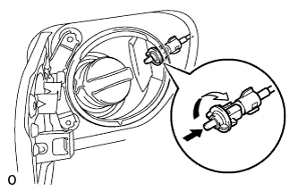
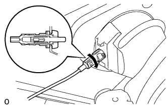
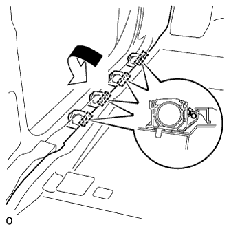
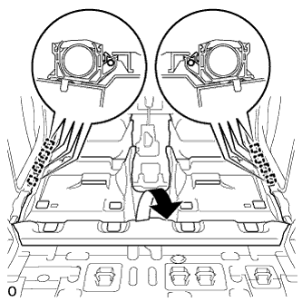

ТРОС УСТРОЙСТВА БЛОКИРОВКИ ТОПЛИВНОЙ КРЫШКИ В СБОРЕ (для 3-дверных моделей) > УСТАНОВКА |
| 1. УСТАНОВИТЕ ТРОС УСТРОЙСТВА БЛОКИРОВКИ ТОПЛИВНОЙ КРЫШКИ В СБОРЕ |
Для моделей с левосторонним рулевым управлением:
Установите трос устройства блокировки топливной крышки и закрепите его 12 зажимами.
Для моделей с правосторонним рулевым управлением:
Установите трос устройства блокировки топливной крышки и закрепите его 14 зажимами.
|  |
Установите держатель устройства блокировки и поверните его по часовой стрелке.
|  |
Установите трос и поверните его по часовой стрелке, как показано на рисунке.
| 2. УСТАНОВИТЕ ПЕРЕДНИЙ НАПОЛЬНЫЙ КОВРИК В СБОРЕ |
Для моделей с левосторонним рулевым управлением:
|  |
Верните передний напольный коврик в исходное положение и закрепите 4 зажимами.
Для моделей с правосторонним рулевым управлением:
|  |
Верните передний напольный коврик в исходное положение и закрепите 8 зажимами.
| 3. УСТАНОВИТЕ РЫЧАГ ОТКРЫВАНИЯ УСТРОЙСТВА БЛОКИРОВКИ ТОПЛИВНОЙ КРЫШКИ |
Подсоедините трос устройства блокировки топливной крышки к рычагу открывания устройства блокировки топливной крышки.
Введите в зацепление 3 захвата и установите рычаг управления топливной крышкой.
| 4. УСТАНОВИТЕ ОПОРНУЮ НАКЛАДКУ ЛЕВОЙ ДВЕРИ В СБОРЕ |
Введите в зацепление 4 фиксатора, 10 захватов и 2 направляющие, чтобы установить опорную накладку двери.
| 5. УСТАНОВИТЕ ОПОРНУЮ НАКЛАДКУ ПРАВОЙ ДВЕРИ (для моделей с правосторонним рулевым управлением) |
| 6. УСТАНОВИТЕ ЛЕВУЮ ЗАДНЮЮ БОКОВУЮ ОБЛИЦОВОЧНУЮ ПАНЕЛЬ В СБОРЕ |
Введите в зацепление 4 захвата и 2 направляющих и пропустите напольное крепление ремня безопасности заднего сиденья № 1 через заднюю боковую облицовочную панель.
Введите в зацепление 7 фиксаторов, чтобы установить заднюю боковую облицовочную панель.
| 7. УСТАНОВИТЕ ЛЕВУЮ БОКОВУЮ ОБЛИЦОВОЧНУЮ ПАНЕЛЬ ПОЛКИ БАГАЖНОГО ОТДЕЛЕНИЯ В СБОРЕ |
Введите в зацепление 9 захватов и 11 фиксаторов, чтобы установить боковую облицовочную панель полки багажного отделения.
Вверните 3 болта и 2 винта.
Установите напольное крепление ремня безопасности заднего сиденья № 1 и закрепите его болтом.
Установите напольное крепление наружных ремней безопасности передних сидений и закрепите его болтом.
| 8. УСТАНОВИТЕ НАКЛАДКУ КРЕПЛЕНИЯ ПОЯСНОГО РЕМНЯ БЕЗОПАСНОСТИ |
Введите в зацепление 3 захвата, чтобы установить накладку крепления поясного ремня безопасности.
| 9. УСТАНОВИТЕ КАРМАН В ЗАДНЕЙ БОКОВОЙ ОБЛИЦОВОЧНОЙ ПАНЕЛИ |
Введите в зацепление 6 захватов и 2 направляющих, чтобы установить карман в задней боковой облицовочной панели.
| 10. УСТАНОВИТЕ ПЕРЕДНЮЮ БОКОВУЮ ОБЛИЦОВОЧНУЮ НАКЛАДКУ ПОЛКИ БАГАЖНОГО ОТДЕЛЕНИЯ (для моделей с задней крышкой) |
Введите в зацепление 2 захвата, чтобы закрепить переднюю боковую облицовочную накладку полки багажного отделения.
| 11. УСТАНОВИТЕ КОЛПАЧОК КРЕПЛЕНИЯ ЗАДНЕЙ КРЫШКИ № 1 (для моделей без задней крышки) |
Введите в зацепление 2 захвата, чтобы закрепить колпачок крепления задней крышки.
| 12. УСТАНОВИТЕ ЗАЩЕЛКУ ОБЛИЦОВКИ БАГАЖНОГО ОТДЕЛЕНИЯ № 1 |
Установите защелку облицовочной панели багажного отделения № 1 так, чтобы она была расположена горизонтально.
| 13. УСТАНОВИТЕ ЗАДНИЙ НАПОЛЬНЫЙ КОВРИК |
Установите задний напольный коврик.
| 14. УСТАНОВИТЕ КРЫШКУ ОТВЕРСТИЯ В ЛЕВОЙ ЗАДНЕЙ БОКОВОЙ ОБЛИЦОВОЧНОЙ НАКЛАДКЕ |
Введите в зацепление 2 захвата и 2 направляющих, чтобы установить крышку отверстия в задней боковой облицовочной панели.
| 15. УСТАНОВИТЕ КРЫШКУ ОТВЕРСТИЯ В ПРАВОЙ ЗАДНЕЙ БОКОВОЙ ОБЛИЦОВКЕ |
| 16. УСТАНОВИТЕ ЗАДНЮЮ ОПОРНУЮ ПЛАСТИНУ КОВРИКА ЗАДНЕГО ПОЛА |
Введите в зацепление 6 захватов, чтобы установить заднюю опорную пластину коврика заднего пола.
Заверните 5 винтов.
| 17. УСТАНОВИТЕ НАКЛАДКУ УСТАНОВОЧНОЙ ПЛАСТИНЫ КОВРИКА |
Введите в зацепление 2 захвата, чтобы установить накладку установочной пластины коврика.
| 18. УСТАНОВИТЕ ЗАДНЮЮ КРЫШКУ В СБОРЕ (для моделей с задней крышкой) |
Установите заднюю крышку.
| 19. УСТАНОВИТЕ ЗАДНЕЕ СИДЕНЬЕ № 1 В СБОРЕ (для моделей с задним сиденьем № 1) |
Для левой стороны:
Установите заднее сиденье № 1 в сборе (Нажмите здесь).
Для правой стороны:
Установите заднее сиденье № 1 в сборе (Нажмите здесь).
| 20. УСТАНОВИТЕ ВЕЩЕВОЙ ЯЩИК В ОБЛИЦОВКЕ ТУННЕЛЯ ПОЛА (для моделей с правосторонним рулевым управлением) |
Для моделей с автоматической трансмиссией:
Установите вещевой ящик в облицовке туннеля пола в сборе (Нажмите здесь).
Для моделей с механической трансмиссией:
Установите вещевой ящик в облицовке туннеля пола в сборе (Нажмите здесь).
Для моделей с холодильной камерой:
Установите вещевой ящик в облицовке туннеля пола в сборе (Нажмите здесь).
| 21. УСТАНОВИТЕ ПЕРЕДНЕЕ СИДЕНЬЕ В СБОРЕ (для моделей с правосторонним рулевым управлением) |
для сидений с ручным приводом:
Установите переднее сиденье в сборе (Нажмите здесь).
для сидений с функцией облегчения посадки "Walk In":
Установите переднее сиденье в сборе (Нажмите здесь).
| 22. ПОДСОЕДИНИТЕ ПРОВОД К ОТРИЦАТЕЛЬНОМУ ВЫВОДУ АККУМУЛЯТОРНОЙ БАТАРЕИ |